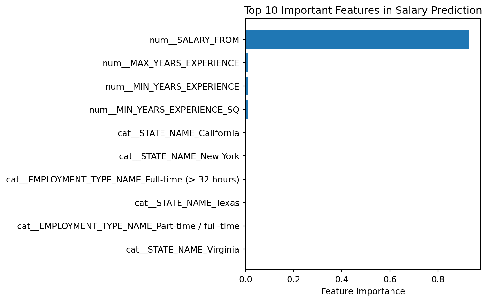
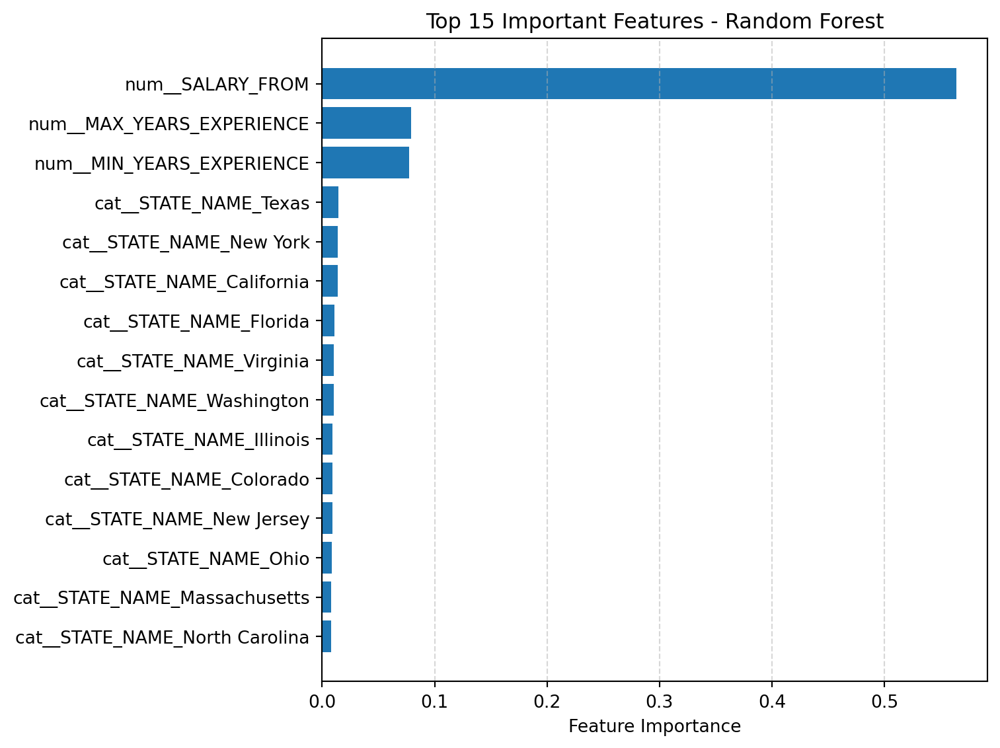

C:\Users\11750\AppData\Local\Temp\ipykernel_12516\462807244.py:10: DtypeWarning:
Columns (19,30) have mixed types. Specify dtype option on import or set low_memory=False.
Train shape: (3004, 6)
Test shape: (752, 6)
K-means ONET
Code
import pandas as pdimport numpy as npfrom sklearn.preprocessing import StandardScalerfrom sklearn.cluster import KMeans# Load datasetdf = pd.read_csv("./data/lightcast_job_postings.csv")# Select features for clusteringcluster_features = ["MIN_YEARS_EXPERIENCE", "MAX_YEARS_EXPERIENCE", "SALARY_FROM"]df_cluster = df.dropna(subset=cluster_features).copy()# Standardize the clustering featuresscaler = StandardScaler()X_scaled = scaler.fit_transform(df_cluster[cluster_features])# Apply KMeanskmeans = KMeans(n_clusters=4, random_state=42, n_init=10)df_cluster["cluster"] = kmeans.fit_predict(X_scaled)# Reference label comparison (e.g., ONET / SOC / NAICS)reference_col ="ONET"# Replace with "SOC" or "NAICS" if neededif reference_col in df_cluster.columns: cluster_reference_summary = ( df_cluster.groupby(["cluster", reference_col]) .size() .reset_index(name="count") .sort_values(["cluster", "count"], ascending=[True, False]) )print(f"\nTop {reference_col} codes by cluster:")print(cluster_reference_summary)else:print(f"⚠️ Column '{reference_col}' not found in the dataset.")
C:\Users\11750\AppData\Local\Temp\ipykernel_12516\3264111928.py:7: DtypeWarning:
Columns (19,30) have mixed types. Specify dtype option on import or set low_memory=False.
import seaborn as snsimport matplotlib.pyplot as pltsns.scatterplot( data=df_cluster, x="MIN_YEARS_EXPERIENCE", y="SALARY_FROM", hue="cluster", palette="tab10")plt.title("KMeans Clustering (colored by cluster)")plt.xlabel("Min Years Experience")plt.ylabel("Salary From")plt.show()
We used KMeans clustering to group job postings based on minimum experience, maximum experience, and starting salary. These features help reveal natural divisions in job types without using predefined labels. After scaling the variables, the model identified four clusters. Although the ONET code 15-2051.01 appeared frequently across all clusters, the differences in experience and salary levels showed clear patterns in how jobs are structured. For job seekers, this analysis helps clarify where their profile fits in the market and what kinds of roles align with their experience and salary expectations.
C:\Users\11750\AppData\Local\Temp\ipykernel_12516\932958033.py:12: DtypeWarning:
Columns (19,30) have mixed types. Specify dtype option on import or set low_memory=False.
We used a linear regression model to predict job salary based on both numeric features (minimum and maximum experience, salary floor) and categorical features like employment type and state. After fitting the model, we found an R² of 0.8869, indicating strong predictive power. The most influential variables included years of experience and full-time employment type, both of which had a clear impact on predicted salary. The plot of actual vs. predicted salaries shows the model closely tracks real values, especially in the mid-range, with some underestimation at the highest salaries. This model helps job seekers understand which factors most affect salary and offers a data-backed view of how their profile may translate into pay.
C:\Users\11750\AppData\Local\Temp\ipykernel_12516\1802226215.py:12: DtypeWarning:
Columns (19,30) have mixed types. Specify dtype option on import or set low_memory=False.
We used polynomial regression to predict salary based on numeric features like experience and salary floor, while also accounting for interactions and non-linear effects using second-degree polynomial terms. The model achieved an R² of 0.8977, slightly outperforming linear regression, with a lower RMSE and MAE. The prediction plot shows a strong alignment between actual and predicted values, especially for mid-range salaries, while still handling higher salaries more flexibly than a standard linear fit. For job seekers, this model highlights how the relationship between experience and salary is not always linear and suggests that salary growth accelerates or flattens depending on experience level.
Random Forest Regressor
Code
import pandas as pdimport numpy as npfrom sklearn.model_selection import train_test_splitfrom sklearn.preprocessing import OneHotEncoderfrom sklearn.compose import ColumnTransformerfrom sklearn.pipeline import Pipelinefrom sklearn.ensemble import RandomForestRegressorfrom sklearn.metrics import mean_squared_error, r2_score# Load datasetdf = pd.read_csv("./data/lightcast_job_postings.csv")# Define relevant columnscontinuous_cols = ["MIN_YEARS_EXPERIENCE", "MAX_YEARS_EXPERIENCE", "SALARY_FROM"]categorical_cols = ["EMPLOYMENT_TYPE_NAME", "STATE_NAME"]target_col ="SALARY"# Drop rows with missing values in required columnsdf = df.dropna(subset=continuous_cols + categorical_cols + [target_col])# Add a quadratic term for better non-linear modelingdf["MIN_YEARS_EXPERIENCE_SQ"] = df["MIN_YEARS_EXPERIENCE"] **2# Define features (X) and target (y)X = df[continuous_cols + ["MIN_YEARS_EXPERIENCE_SQ"] + categorical_cols]y = df[target_col]# Preprocessing pipeline: One-hot encode categoricals, passthrough numericspreprocessor = ColumnTransformer(transformers=[ ("cat", OneHotEncoder(handle_unknown="ignore"), categorical_cols), ("num", "passthrough", continuous_cols + ["MIN_YEARS_EXPERIENCE_SQ"])])# Full pipeline: preprocessing + random forest modelpipeline = Pipeline(steps=[ ("preprocess", preprocessor), ("model", RandomForestRegressor(n_estimators=100, random_state=42))])# Split dataset into training and testing setsX_train, X_test, y_train, y_test = train_test_split(X, y, test_size=0.2, random_state=42)# Train the modelpipeline.fit(X_train, y_train)# Predict on test sety_pred = pipeline.predict(X_test)# Evaluate performancermse = np.sqrt(mean_squared_error(y_test, y_pred)) # compatible RMSE calculationr2 = r2_score(y_test, y_pred)# Output metricsprint(f"RMSE: {rmse:.2f}")print(f"R² Score: {r2:.3f}")
C:\Users\11750\AppData\Local\Temp\ipykernel_12516\1632232137.py:11: DtypeWarning:
Columns (19,30) have mixed types. Specify dtype option on import or set low_memory=False.
RMSE: 8811.35
R² Score: 0.942
Code
import matplotlib.pyplot as plt# Get trained model and feature namesmodel = pipeline.named_steps["model"]feature_names = pipeline.named_steps["preprocess"].get_feature_names_out()# Get feature importancesimportances = model.feature_importances_# Get top 10 featurestop_idx = np.argsort(importances)[-10:]top_features = np.array(feature_names)[top_idx]top_importances = importances[top_idx]# Plotplt.figure(figsize=(8, 5))plt.barh(top_features, top_importances)plt.xlabel("Feature Importance")plt.title("Top 10 Important Features in Salary Prediction")plt.tight_layout()plt.show()

We used a Random Forest regression model to predict job salaries based on experience, employment type, and location. This model outperformed both linear and polynomial regression with an R² of 0.942 and an RMSE of 8811.35, showing high accuracy in capturing complex relationships between features and salary. The feature importance plot shows that the starting salary field (SALARY_FROM) is by far the most influential input, followed by years of experience and job location. For job seekers, this model helps identify which factors have the most impact on expected salary and supports more informed decisions when evaluating or negotiating job offers.
Logistic Regression & Random Forest Classifier
Code
import pandas as pdfrom sklearn.model_selection import train_test_splitfrom sklearn.preprocessing import OneHotEncoder, StandardScalerfrom sklearn.compose import ColumnTransformerfrom sklearn.pipeline import Pipelinefrom sklearn.linear_model import LogisticRegressionfrom sklearn.ensemble import RandomForestClassifierfrom sklearn.metrics import classification_report, accuracy_score# Load datadf = pd.read_csv("./data/lightcast_job_postings.csv")# Set target to NAICS2target_col ="NAICS2"categorical_cols = ["EMPLOYMENT_TYPE_NAME", "STATE_NAME"]numeric_cols = ["MIN_YEARS_EXPERIENCE", "MAX_YEARS_EXPERIENCE", "SALARY_FROM"]# Drop rows with missing valuesdf = df.dropna(subset=numeric_cols + categorical_cols + [target_col])# Filter to classes with at least 50 samplesclass_counts = df[target_col].value_counts()valid_classes = class_counts[class_counts >=50].indexiflen(valid_classes) <2:raiseValueError("Not enough valid NAICS2 classes for classification.")df = df[df[target_col].isin(valid_classes)]# Print classes being usedprint("Classes used:", df[target_col].unique())# Define features and targetX = df[numeric_cols + categorical_cols]y = df[target_col]# Preprocessing pipelinepreprocessor = ColumnTransformer([ ("cat", OneHotEncoder(handle_unknown="ignore"), categorical_cols), ("num", StandardScaler(), numeric_cols)])# Train-test split (80/20 stratified)X_train, X_test, y_train, y_test = train_test_split( X, y, test_size=0.2, random_state=42, stratify=y)# Logistic Regression pipelinelogit_pipeline = Pipeline([ ("preprocess", preprocessor), ("model", LogisticRegression(max_iter=1000, multi_class="multinomial"))])logit_pipeline.fit(X_train, y_train)y_pred_logit = logit_pipeline.predict(X_test)print("\n=== Logistic Regression ===")print(classification_report(y_test, y_pred_logit))print(f"Accuracy: {accuracy_score(y_test, y_pred_logit):.4f}")# Random Forest pipelinerf_pipeline = Pipeline([ ("preprocess", preprocessor), ("model", RandomForestClassifier(n_estimators=100, random_state=42))])rf_pipeline.fit(X_train, y_train)y_pred_rf = rf_pipeline.predict(X_test)print("\n=== Random Forest Classifier ===")print(classification_report(y_test, y_pred_rf))print(f"Accuracy: {accuracy_score(y_test, y_pred_rf):.4f}")
C:\Users\11750\AppData\Local\Temp\ipykernel_12516\1685128331.py:11: DtypeWarning:
Columns (19,30) have mixed types. Specify dtype option on import or set low_memory=False.
C:\Repositories\ad688-employability-sp25A1-group4.io-11\.venv\lib\site-packages\sklearn\linear_model\_logistic.py:1247: FutureWarning:
'multi_class' was deprecated in version 1.5 and will be removed in 1.7. From then on, it will always use 'multinomial'. Leave it to its default value to avoid this warning.
C:\Repositories\ad688-employability-sp25A1-group4.io-11\.venv\lib\site-packages\sklearn\metrics\_classification.py:1565: UndefinedMetricWarning:
Precision is ill-defined and being set to 0.0 in labels with no predicted samples. Use `zero_division` parameter to control this behavior.
C:\Repositories\ad688-employability-sp25A1-group4.io-11\.venv\lib\site-packages\sklearn\metrics\_classification.py:1565: UndefinedMetricWarning:
Precision is ill-defined and being set to 0.0 in labels with no predicted samples. Use `zero_division` parameter to control this behavior.
C:\Repositories\ad688-employability-sp25A1-group4.io-11\.venv\lib\site-packages\sklearn\metrics\_classification.py:1565: UndefinedMetricWarning:
Precision is ill-defined and being set to 0.0 in labels with no predicted samples. Use `zero_division` parameter to control this behavior.
import matplotlib.pyplot as pltimport numpy as np# Random Forest feature importancesrf_features = rf_pipeline.named_steps["preprocess"].get_feature_names_out()rf_importances = rf_pipeline.named_steps["model"].feature_importances_# Top 15rf_top_idx = np.argsort(rf_importances)[-15:]plt.figure(figsize=(8, 6))plt.barh(np.array(rf_features)[rf_top_idx], rf_importances[rf_top_idx])plt.title("Top 15 Important Features - Random Forest")plt.xlabel("Feature Importance")plt.grid(True, axis="x", linestyle="--", alpha=0.5)plt.tight_layout()plt.show()

Code
# Logistic Regression coefficientslogit_features = logit_pipeline.named_steps["preprocess"].get_feature_names_out()logit_coefs = logit_pipeline.named_steps["model"].coef_# Mean absolute value across classeslogit_importance = np.mean(np.abs(logit_coefs), axis=0)# Top 15logit_top_idx = np.argsort(logit_importance)[-15:]plt.figure(figsize=(8, 6))plt.barh(np.array(logit_features)[logit_top_idx], logit_importance[logit_top_idx])plt.title("Top 15 Feature Coefficients - Logistic Regression")plt.xlabel("Average |Coefficient| Across Classes")plt.grid(True, axis="x", linestyle="--", alpha=0.5)plt.tight_layout()plt.show()
The Random Forest classifier outperformed Logistic Regression in classifying job postings by NAICS2 industry code, achieving 53.5% accuracy compared to Logistic Regression’s 31%. The Random Forest model identified salary-related numeric features like SALARY_FROM, MAX_YEARS_EXPERIENCE, and MIN_YEARS_EXPERIENCE as the most influential, while Logistic Regression emphasized categorical features such as state-level job locations. The poor performance of Logistic Regression is likely due to its linear nature and inability to capture complex patterns, especially in a multi-class problem with subtle feature interactions. In contrast, Random Forest leveraged both numeric and categorical features more effectively, making it the better choice for this classification task.